1.什么是 Docker
①作用
- 解决了大部分企业的痛点：快速的持续集成、服务的弹性伸缩、部署简单、解放运维、为企业节省了机器资源。
- 目前京东、阿里、腾讯等公司已经在生产环境中大规模的使用 Docker。
②概念
- 概念：Docker 是一个用来装应用的容器，就像杯子可以放水，笔筒可以放笔，书包可以放书一样。你可以把 “Hello World！” 放到 Docker 中，也可以把网站放到 Docker 中，也可以把任何你想到的程序放到 Docker 中。
- 官网：www.docker.com
- 对 Docker 的介绍：Docker is the world’s leading software containerization platform.（Docker 是世界领先的软件容器化平台）
- 总结：Docker 是一个使用 Go 语言开发的开源的应用容器引擎，可以让开发者打包他们的应用以及依赖包到一个可移植的容器中，然后发布到任何流行的机器上。
③特点
- Docker 是一个用来装应用的容器，由 Docker 公司开发。
- 开源的，托管在 github 上（
docker/docker已改名为moby/moby）。
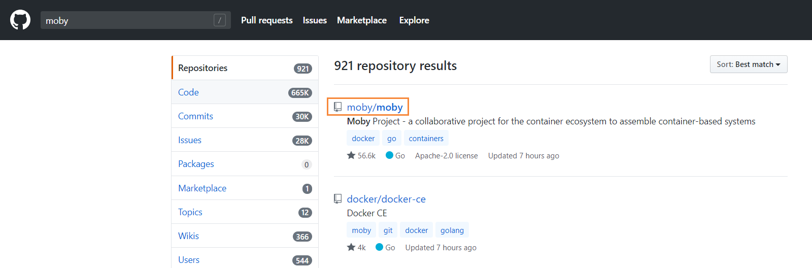
- 跨平台的，支持 Windows、Macos、Linux。
- Docker 是在 ubuntu 系统上开发的，所以推荐在 Linux 上使用 Docker。
2.了解 Docker
①Docker 思想
- 集装箱思想：把程序的运行环境和部署细节进行整体封装并密封，不容易丢失或损坏。
- 保证我们的程序放在任何地方运行时，都不会缺少东西。
- 标准化思想：
- 运输方式的标准化：Docker 有一个超级码头，任何一个地方需要货物时都由鲸鱼先将货物送到超级码头，再由鲸鱼从超级码头把货物送到目的地去。
- 例如：把台式机上的应用部署到笔记本上，可以在台式机上执行 docker 命令，让鲸鱼把程序送到超级码头，然后在笔记本上执行 docker 命令，让鲸鱼把程序从超级码头送到笔记本上。
- 即是执行固定命令发送代码到超级码头，执行固定命令将超级码头中的代码运送到部署地的标准化。
- 存储方式的标准化：程序员不需要关心应用存储在什么地方，docker 会自动进行标准化处理，我们只需要通过 docker 命令来启动或停止程序。
- API 接口的标准化：提供了一系列的 RestAPI 接口包含了对应用的启动、停止、查看和删除等控制。
- 例如：能够实现执行同样的 docker 命令，来控制不同的 Web 应用服务器，例如 Tomcat、Nginx 等。
- 即提供了一系列的 RestAPI 接口，包含了对不同应用的统一控制的标准化。
- 隔离思想：使用虚拟机时，有独立的内存、CPU、硬盘，使得使用者完全感觉不到外面主机的存在。Docker 也是类似，但是 Docker 技术更加轻量，可以实现快速的创建和销毁。创建虚拟机可能需要几分钟，而创建 Docker 只需要 1 秒。
- 最底层的技术是 Linux 的一种内核限制机制 LXC。
- LXC 是一种轻量级的容器虚拟化技术，最大效率的隔离了进程和资源，通过 cgroup 、namespace 等限制隔离进程组所使用的物理资源，如 CPU、I / O、Memory 等等。
- 这个机制早在多年前就已经加入到 Linux 内核了，直到 2013 年 Docker 出世的时候它才火起来。
- Docker 也是随着云计算、敏捷开发、弹性服务等大环境的变迁而变火的，时势造英雄。
②Docker 解决了什么问题
- 问题：程序在自己的环境中运行完全没有问题，而在其他人的环境中出问题。
- Java Web 程序正常运行依赖于：操作系统、JDK、Tomcat、源代码、配置文件等。
- 在不同的环境下部署程序时，如果出现操作系统环境的改变、JDK 和 Tomcat 的版本差异、代码依赖于本地环境、配置文件丢失或者与本地系统相关等都可能会导致程序运行不起来。
- 解决方案：程序员运行 docker 命令，把操作系统、JDK、Tomcat、源代码、配置文件都封装在集装箱中，然后打包交给鲸鱼，由鲸鱼送到服务器上。
- Docker 解决了运行环境不一致所带来的问题。
- 问题：系统好卡，谁又写死循环了，把资源都占用了。
- 当多个程序员共用一台服务器的时候，由于某一个人的程序失误，可能会导致其他人的程序内存耗尽、程序挂掉，或者程序运行越来越慢，甚至终端变卡顿。
- 解决方案：Docker 的隔离机制，在每个程序启动时都限制了最大可启用的 CPU、内存和硬盘等，如果超过这个限制，就会杀掉这个进程。
- 问题：客户数量激增（例如：双 11），原有的服务器撑不住了，需要扩展服务器数量。
- 一到某些节日，运维需要对每一台服务器进行安装软件、部署应用、调试测试等工作，等高峰过了再将多余的节点下线（缺点：工作量太大）。
- 解决方案：只要在每台机器上执行几个 docker 命令，分分钟就可以扩展成千上万台，并且运行不会出现任何问题。
- Docker 让快速扩展、弹性伸缩变得简单。
3.走进 Docker
①核心技术
- 三个核心词汇：镜像（集装箱）、仓库（超级码头）和容器（运行程序的地方）
- 用 Docker 运行一个程序的过程：去仓库把镜像拉到本地（Ship），然后用一条命令把镜像运行（Build）起来变成容器（Run）。
- Build：构建镜像
- Ship：运输镜像（在仓库和主机之间运输）
- Run：运行的镜像就是一个容器
②镜像
- 英文名：image
- 鲸鱼驮着的所有的集装箱就是一个镜像
- 从本质上来说，镜像就是一系列的文件（可以包括应用程序的文件，也可以包括应用的运行环境的文件）。Docker 利用 Linux 的联合文件系统（UnionFS）存储镜像文件，将之保存在本地。
- 联合文件系统是一种分层的文件系统，它可以将不同的目录挂载到同一个虚拟文件系统下面。可以在同一个文件夹下看到 test1 文件夹和 test2 文件夹的内容集合。通过这样一种方式，联合文件系统就可以实现文件的分层，比如 test1 可以看做是第一层，test2 可以看做是第二层，每一层有每一层自己的文件，Docker 镜像就是利用了这种分层的概念来实现了镜像存储。
- 暂且忽视 writable 层，Docker 镜像的每一层文件系统都是只读的，把每一层加载完成之后，这些文件都会被看成是同一个目录，相对于只有一个文件系统，Docker 的这种文件系统就被称为镜像。
- Image 层：相关软件（JDK、Tomcat、应用代码等），每一层都是我们自己可以控制的。
- Debian 层：具体的一个 Linux 操作系统
- 最底层：操作系统的引导
- 镜像的存储格式（可以看成是一个个集装箱摞在一起）：
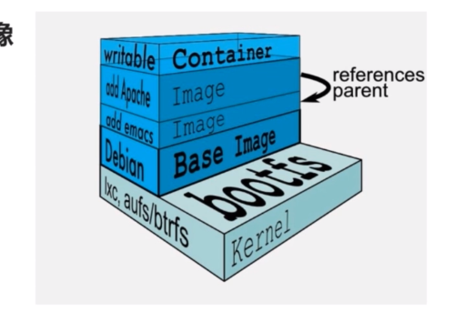
③容器
- 容器的本质就是一个进程，可以将它想象成是一个虚拟机，但是这个 “虚拟机” 的文件系统是一层一层的，并且只有最上面一层是可写的，其他层都是只读的。
- 为什么有可写层：大部分程序在运行起来后，都会有写日志、修改文件等需求，所以容器在最高层创建了一个可读可写的文件系统。如果想对镜像文件进行修改操作，那么可读层内容会拷贝到最顶层（可写层），然后再进行修改操作。当我们的应用读取镜像文件时，会从最顶层（可写层）查找，如果没有相应文件，才会去可读层查找。
- 即容器是可以修改的，而镜像是不能修改的。这样保证同一个镜像可以生成多个容器，它们之间独立运行，互不干扰。
④仓库
- 构建镜像的目的：为了在其他的环境中运行我们的程序。
- 为了在其他的环境中运行程序，我们需要将构建的镜像传递到目的地，Docker 仓库可以帮助我们传输。
- 镜像的传输过程：先将构建的镜像传到 Docker 仓库中，再由目的地去 Docker 仓库将镜像拉取到本地。
- Docker 提供了 Docker 仓库（一个中央服务器，地址是 http://hub.docker.com）
- 如果自己的镜像比较私密，不想让别人看到，Docker 也支持自己（在内网中）搭建一个镜像中心。
4.Docker 初体验
①安装 Docker
- Docker 下载地址：
- win10 专业版：官网下载（Docker 对 win 10 做了原生的支持）
- windows 其他版本：官网下载（在 windows 上虚拟了一个 Linux 的运行环境）
- 国内下载地址：http://get.daocloud.io
- boot2docker.iso 下载地址：http://pan.baidu.com/s/1qYyc0ag
- 安装教程：
②第一个 Docker 镜像
- docker pull [OPTIONS] NAME[:TAG]：从 Docker 的远程仓库拉取镜像到本地
NAME表示要拉取的镜像的名称- 默认拉取地址为 Docker 官方提供的默认仓库（http://hub.docker.com）
TAG表示要拉取的镜像的版本，默认版本为:latest，表示为最新版本。
- docker images [OPTIONS] [REPOSITORY[:TAG]]：查看本机所有的镜像列表
- 可以用于验证 docker pull 命令是否执行成功
REPOSITORY：镜像名称TAG：镜像版本IMAGE ID：64 位字符串，用于唯一标识镜像。
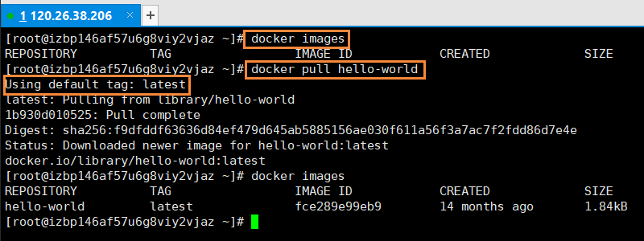
③第一个 Docker 容器
- docker run [OPTIONS] IMAGE[:TAG] [COMMAND] [ARG…]：运行镜像
command：镜像在运行起来时需要执行什么命令ARG：command命令所依赖的参数
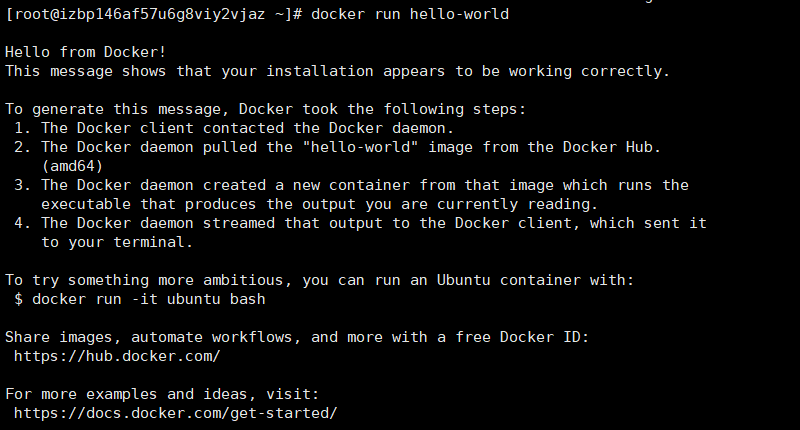
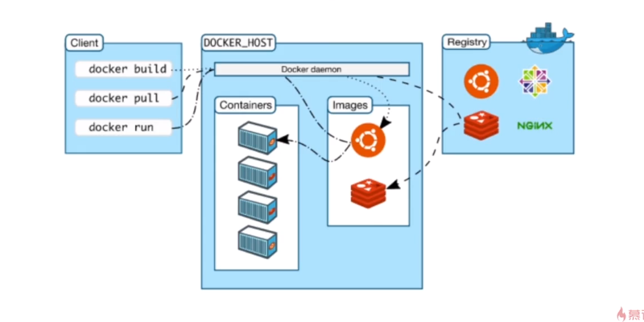
- Client：本机执行命令的客户端
- DOCKER_HOST：本机的 Docker 服务
- Registry：Docker 的远程仓库
- docker pull 流程：Docker Client 向 Docker daemon 发送 docker pull 命令，Docker daemon 会先在本机中寻找是否有相应的镜像，如果存在且版本一致则不做任何操作，如果不存在则会从 Docker 的远程仓库中将相应的镜像拉取到本地。
- docker run 流程：Docker Client 向 Docker daemon 发送 docker run 命令，Docker daemon 会先在本机中寻找是否有相应的镜像，如果不存在则会从 Docker 的远程仓库中将相应的镜像拉取到本地（相当于执行 docker pull 命令），然后将镜像通过一定方式运行起来变成 Docker 的容器。
5.Docker 运行 Nginx 服务器
①运行 nginx 镜像
- Nginx（web 服务器）镜像特点：持久运行的容器
- 前台运行镜像：docker run NAME（Ctrl + C 结束进程）
- 后台运行镜像：docker run -d NAME （返回容器 id）
- docker ps：查看正在运行的容器
- docker run –help：查看 docker run 命令的相关参数
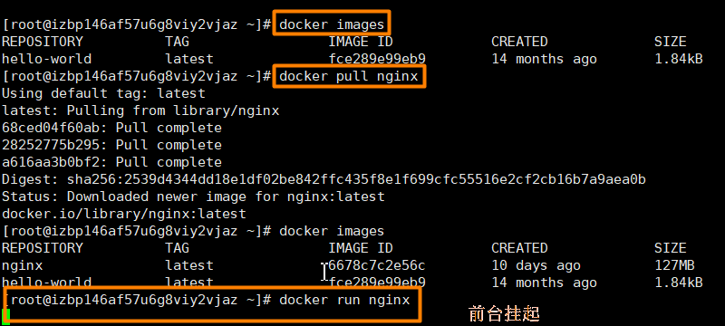
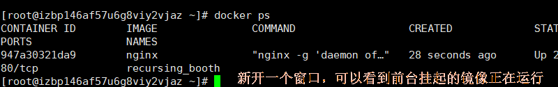
- docker exec [OPTIONS] CONTAINER COMMAND [ARG…]：在一个运行的容器中运行一个命令
CONTAINER：容器名称 / 容器 id（不需要写全 id，写到能够唯一确定一个容器即可）-i：保证输入有效-t：分配一个伪终端
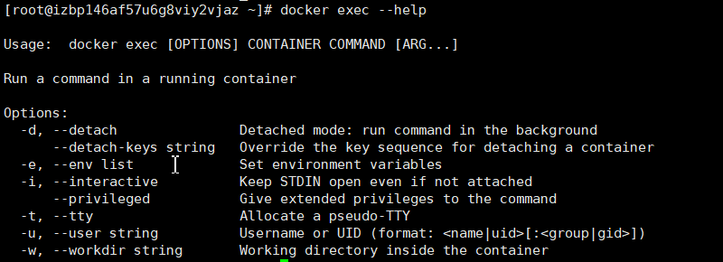
- docker exec -it id / name bash：进入容器
- 其实就是一个Linux，因为 Nginx 要运行在 Linux 容器上。
- ps -ef：查看当前运行的进程
- exit：退出容器
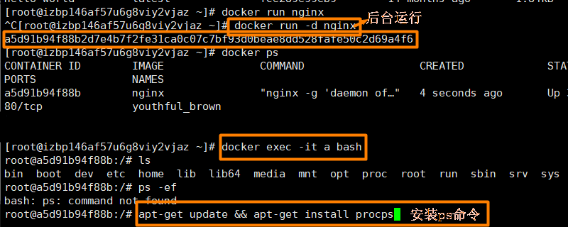
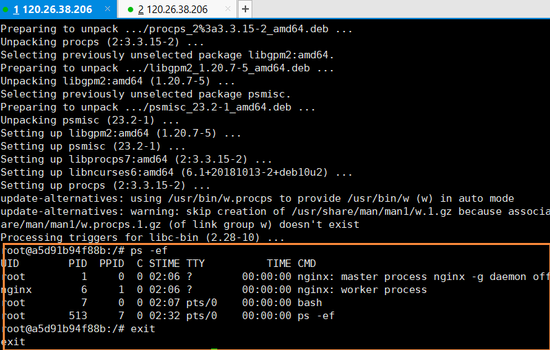
②Docker 网络
Docker 使用了 Linux 的 Namespace （命名空间）技术来进行资源的隔离，如 PID Namespace -> 隔离进程，Mount Namespace -> 隔离文件系统，Network Namespace -> 隔离网络等。每一个 Network Namespace 都提供了一份独立的网络环境（网卡、路由、iptable 规则等都与其他的 Network Namespace 隔离）。
- Docker 的网络类型
- bridge 模式（桥接）：Docker 默认的网络设置，此模式会为每一个容器分配一个独立的 Network Namespace、设置 IP 和端口等。一个虚拟网桥（docker0）与主机的网卡（eth0）相连，在启动容器时，容器中会虚拟一个容器的虚拟网卡，与网桥相连，然后通过网桥与主机进行通讯。
- host 模式：容器不会获得一个独立的 Network Namespace，而是和主机共同使用一个。这时容器将不会虚拟出自己的网卡，配置自己的 IP 等，而是会使用宿主机上的 IP 和端口。即在 Docker 中使用网络和在主机上使用网络是一样的（容器直接连在主机的网卡上，与主机使用同一块网卡）。
- none 模式：Docker 将不会和外界进行通讯
- Docker 的端口映射：在使用 bridge 模式的时候，因为 bridge 模式所使用的网络有独立的 Namespace，这就需要一种技术使容器内的端口可以在主机上访问到，这种技术就是端口映射。Docker 可以将容器内的某一个端口与容器所在主机上的某一个端口之间做一个映射，当你在访问主机上的端口时，其实就是在访问容器内的端口，虚拟网桥会进行请求转发（端口映射）并将响应按原路返回。
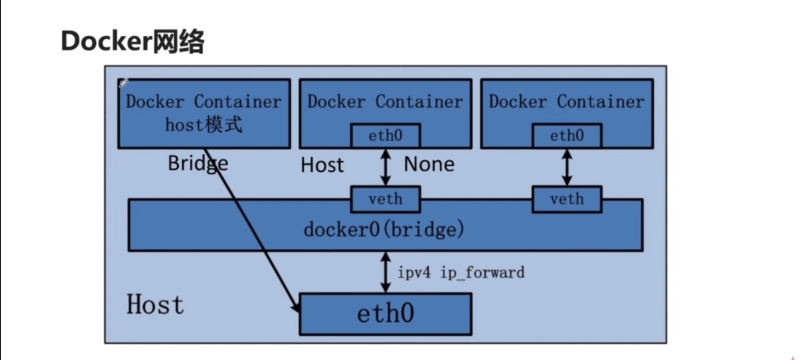
- docker stop id：停止容器
- docker restart id：重启容器
- docker run -d -p 主机端口:容器端口 容器名称：开放容器的一个端口到主机上的一个端口
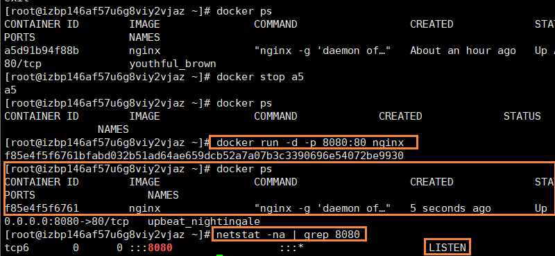
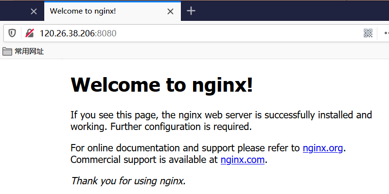
- docker run -d -P 容器名称：开放容器的所有监听端口到主机上的随机端口（批量端口的映射方式）
- netstat -na | grep 8080：查看 8080 端口的状态
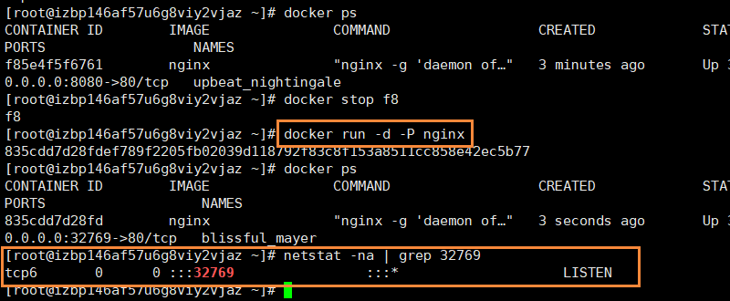
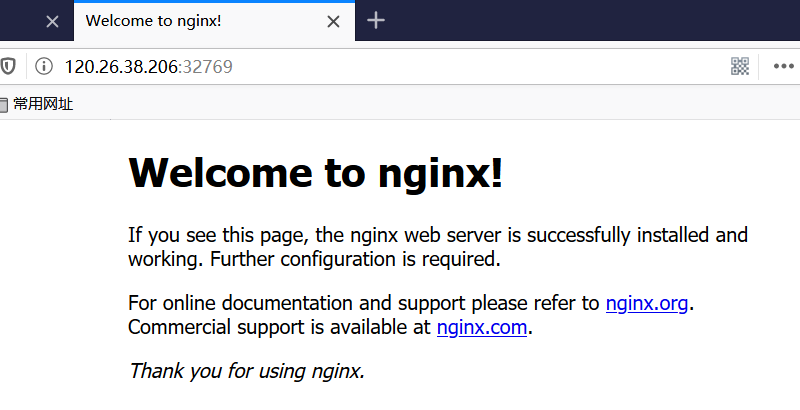
注意：使用云服务器操作时，记得让安全组开放对应的端口号，否则会访问失败。
6.Docker 化的 JavaWeb 应用
①制作自己的镜像
- 我们之前所下载的镜像都是由其他人做好后传到镜像仓库中的，我们也可以制作自己的镜像。
Dockerfile：告诉 Docker 要怎么制作自己的镜像- docker build：执行
Dockerfile中所描述的每一件事情，最终把 Docker 镜像构建出来。 - 下面演示使用 jpress 来制作自己的镜像：
下载
jpress-web-newest.war并上传到服务器
链接：https://pan.baidu.com/s/1j8gBluzagoOIl1Th_ntXqA
提取码：fcqd编写
Dockerfile文件
1 | from tomcat # 继承自tomcat这个基础镜像 |
- 下载基础镜像
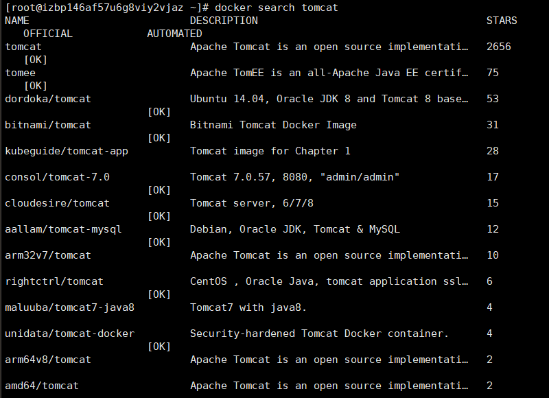
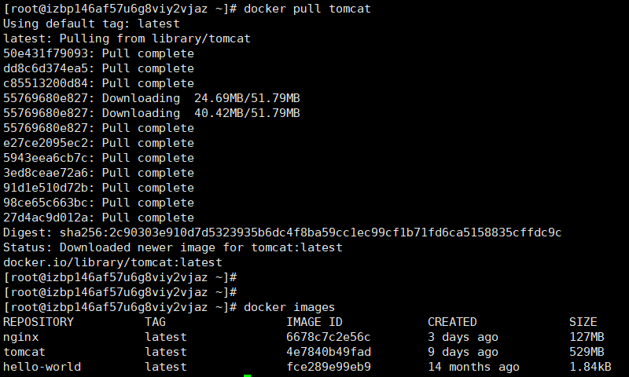
- 构建镜像：docker build Dokerfile文件所在的目录（若是当前目录则默认为 .）
- docker build -t REPOSITORY:TAG Dokerfile文件所在的目录：给镜像指定名称和版本
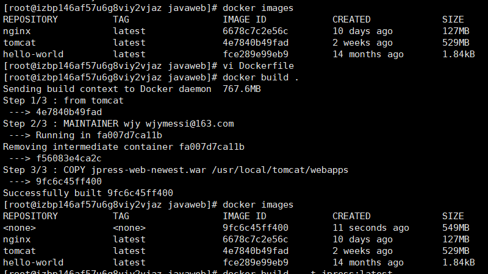
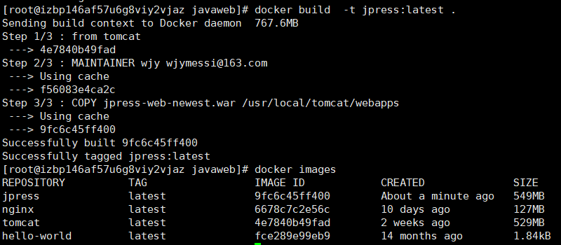
②运行自己的容器
- 下面我们开始运行自己创建的镜像：
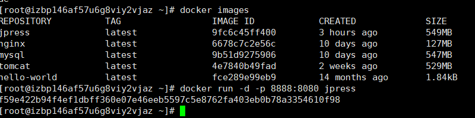
- 如果出现下图问题，可以尝试此 解决方法。
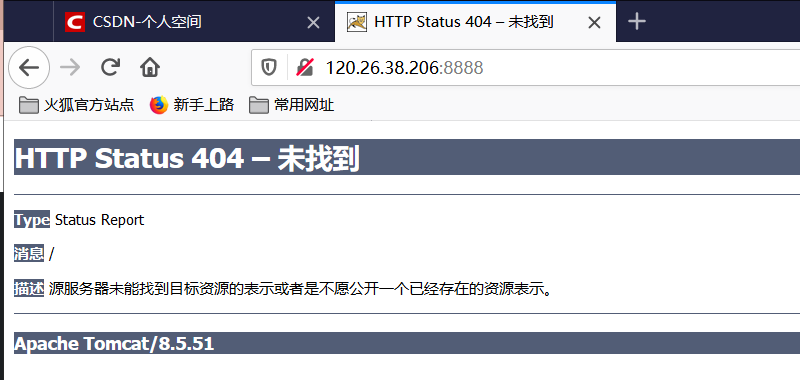
- 成功运行镜像
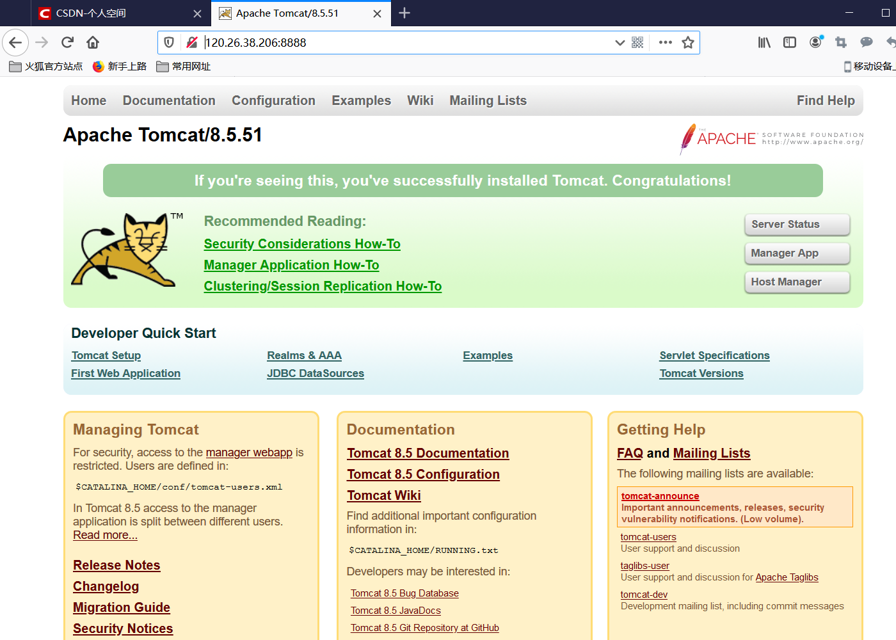
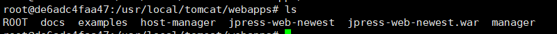
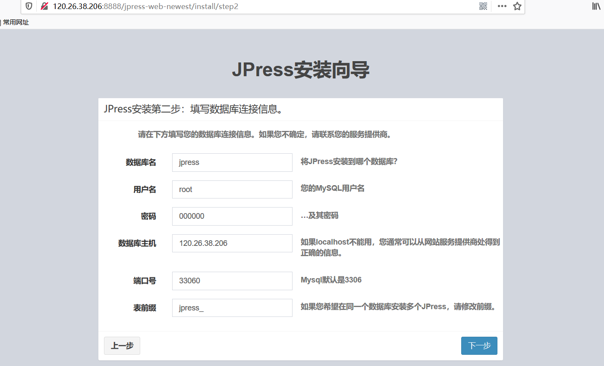
7.总结
- Docker 思想：集装箱思想、标准化思想、隔离思想（网络隔离、磁盘隔离、进程隔离）
- Docker 核心内容：镜像（Build：构建镜像）、容器（Run：运行容器）、仓库（SHIP：镜像通过仓库传输）
- Docker 命令：pull（下拉镜像）、build（构建镜像）、run（运行容器）、stop（停止容器）、restart（重启容器）、exec（进入容器内部）…
附录
- 我的个人博客：messi1002.top
- 如有错误或疑惑之处 请联系 wjymessi@163.com